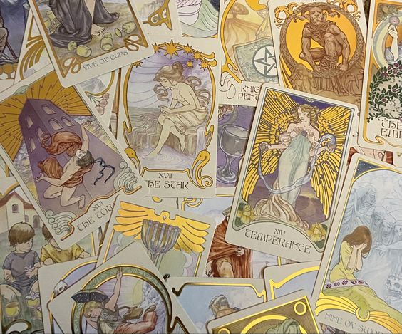
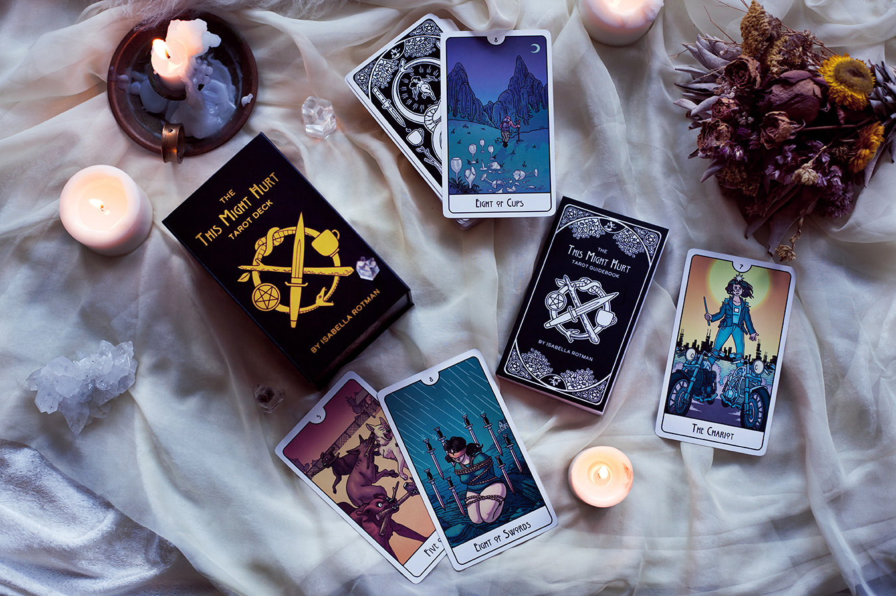
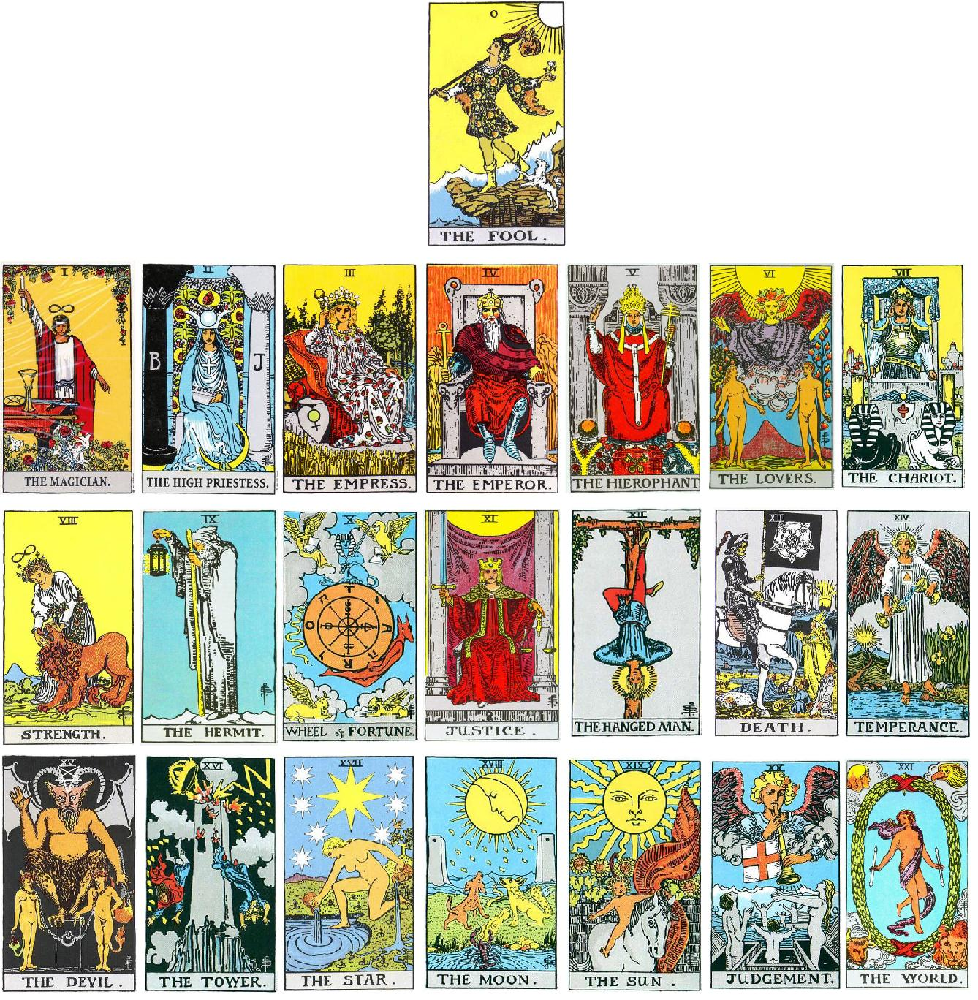
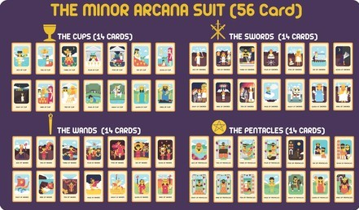

Shop Angel Tarot là một trong những thương hiệu đã khẳng định được tên tuổi trên thị trường, nhập khẩu và phân phối mặt hàng bài Tarot gốc từ Mỹ & châu Âu lớn nhất và uy tín nhất Việt Nam hiện nay.
Angel Tarot, “Where Destiny Comes Bright”, là nơi bạn có thể đặt trọn niềm tin khi cần tìm cho chính mình, cho người mình yêu thương, cho bạn bè hay những người thân trong gia đình một bộ bài Tarot để đồng hành trong cuộc sống hàng ngày. Nắm bắt được mong muốn của các bạn trẻ đam mê Tarot,
Angel Tarot mong muốn đem đến sự hài lòng cao nhất cho khách hàng với chủ trương bán hàng có sẵn, và đề cao mọi ý kiến đóng góp quý báu của khách hàng sử dụng sản phẩm và dịch vụ của chúng tôi để ngày càng hoàn thiện hơn.
Angel Tarot là shop bán bài Tarot duy nhất tại Việt Nam có tư cách pháp nhân, hoạt động dưới sự cho phép trong khuôn khổ pháp luật Việt Nam nói chung và Luật Kinh doanh Việt Nam nói riêng. Khách hàng đến với chúng tôi sẽ được bảo đảm đầy đủ quyền lợi cũng như thông tin cá nhân được bảo mật tuyệt đối theo pháp luật.
- Số lượng hàng nhập mỗi tháng hơn 300 bộ bài Tarot với ít nhất 200 tựa khác nhau.
- Luôn có hàng tại shop mọi thời điểm trong tháng tối thiểu 200 bộ.
– Mỗi tháng có ít nhất 4 đợt order, với thời gian từ lúc đặt hàng cho đến khi về đến shop chỉ trong vòng 10-15 ngày làm việc. Trường hợp bất khả kháng hàng cũng sẽ về đến shop trong vòng tối đa 20 ngày làm việc.
– Trừ những bộ bài đặc biệt hoặc có giá trị lớn, Angel Tarot là shop duy nhất không lấy trước tiền cọc của khách. Trường hợp nhận tiền cọc, chúng tôi sẽ cung cấp biên lai có đầy đủ con dấu và chữ ký người đại diện công ty cho khách hàng.
– Cam đoan ship hàng ra Hà Nội và các tỉnh thành ngoài TPHCM với chi phí thấp nhất.
– Nhận giao hàng tận nhà tại các khu vực theo quy định ở TPHCM, Vũng Tàu, Cần Thơ.
Shop Angel Tarot, địa chỉ D2-2 Chung Cư Hoàng Anh Gia Lai 2, số 783 Trần Xuân Soạn, Q.7, TP.HCM.
– Chỉ bán bài Tarot gốc original 100% từ nhà phát hành (các nhà xuất bản lớn của Mỹ hoặc đặt mua trực tiếp từ tác giả bộ bài).
– Toàn bộ được nhập khẩu trực tiếp hoặc xách tay từ Mỹ.
– Không bán hàng fake – copy – handmade.
– Sản phẩm đúng như hình minh họa trên website mystictarot.vn.
– Mỗi bộ đầy đủ số lá bài như quy định, booklet, sách hướng dẫn (nếu có), hộp đựng nguyên seal…
– Giấy tờ chứng minh hàng nhập từ Mỹ có liên quan (đối với hàng có qua hải quan)
– Đối với hàng order, cam kết giao hàng trong vòng tối đa 20 ngày làm việc sau khi nhận tiền cọc. Các trường hợp ngoại lệ sẽ thông báo rõ cho khách hàng khi đặt cọc
– Viết biên nhận sau khi nhận tiền cọc nếu khách hàng có yêu cầu
– Giá cả hợp lý, đúng giá thị trường
Tarot là một bộ bài 78 lá, trên mỗi lá được vẽ một hình ảnh tượng trưng khác nhau. Một bộ bài Tarot chuẩn có 22 lá gọi là Major Arcana hoặc Trumps, và 4 nhóm 14 lá – tương tự như bài tây – gọi là Minor Arcana hoặc Pip Cards.
Bài Tarot có thể được sử dụng để giải quyết các vấn đề người đọc đang gặp phải trong cuộc sống, sự mường tượng về tính sáng tạo, thiền định, cải thiện bản thân, là công cụ hỗ trợ trí tuệ, bói toán, tiên tri, hay thậm chí chỉ để dùng để chơi bài như bài tây thông thường. Một số bộ Tarot chỉ mang mục đích sưu tầm theo phong cách hình vẽ, trong khi những bộ khác lại đào sâu vào quá trình nghiên cứu và học hỏi tìm tòi về lịch sử của Tarot.
Hiện nay có rất nhiều truyền thuyết và ý kiến về xuất xứ nguồn gốc của bài Tarot – một số người cho rằng Tarot xuất xứ từ thời Ai Cập Cổ Đại; người lại cho rằng người Gipxi (Ấn Độ) đã tạo ra bài Tarot; kẻ khác lại cho rằng loại bài này xuất hiện từ thời Atlantis – nhưng có nhiều luận điểm chứng cứ lịch sử cho thấy xuất xứ của bài Tarot chính xác là từ miền Bắc nước Ý, vào khoảng giữa thế kỷ 15.
Nhiều họa sỹ khác nhau đã phân tích các biểu tượng của Tarot theo nhiều cách khác nhau có bổ sung, cải tiến thêm chi thiết tùy theo quan điểm của họ. Có nhiều loại chủ đề tương ứng với hệ thống bài Tarot. Ngày nay có đến hàng nghìn bộ bài đã và đang ra đời, theo nhiều phong cách khác nhau đáp ứng cho mọi đối tượng, mọi nhu cầu và mọi loại tín ngưỡng, sở thích, từ đời thường như bóng chày cho đến các chủ đề hình ảnh tà thuật đầy bí ẩn.
Một bộ bài Tarot là tập hợp của 78 lá bài, mỗi lá Tarot này đều hàm chứa ý nghĩa riêng của nó. Có 22 lá Major Arcana (ẩn chính) và 56 lá Minor Arcana (ẩn phụ) chia làm 4 suit (Cups, Pentacles, Swords và Wands). Các lá bài Tarot đều có một nghĩa xuôi và một nghĩa đảo ngược.
Trong chuyên mục này, Angel Tarot sẽ chuyển ngữ Ý Nghĩa 78 Lá Bài Tarot từ cơ sở dữ liệu của trang Biddy Tarot để giúp bạn giải nghĩa và hiểu được các ý nghĩa của các lá bài Tarot, bao gồm các nghĩa xuôi và ngược.
Xin lưu ý rằng những ý nghĩa lá bài Tarot trong đây chỉ nhằm mục đích hướng dẫn. Việc giải bài Tarot đòi hỏi nhiều năm kinh nghiệm và một kiến thức sâu sắc về Tarot. Với những người giải bài (reader) khác nhau, việc giải nghĩa những lá bài Tarot cũng khác nhau, theo cách thức của họ.
Bộ Ẩn Chính Major Arcana gồm 22 lá phản ánh những nguyên mẫu chính hoặc những bài học tinh thần trong cuộc sống của chúng ta.
Các lá bài này đại diện cho sự giác ngộ tinh thần và mô tả những trạng thái khác nhau mà chúng ta gặp phải khi tìm kiếm những ý nghĩa và sự hiểu biết lớn hơn trong cuộc sống. Theo cách này, các lá bài giữ vai trò là những bài học có ý nghĩa sâu sắc.
Trong cuốn sách Pocket Guide to Tarot (Hướng Dẫn Nhập Môn Tarot), Alan Oken cho rằng 22 lá bài Ẩn Chính cũng giống như Mandala của Tarot. Mandala là những hình ảnh chi tiết giống hình tròn biểu tượng cho Vũ Trụ hoặc Cái Tôi (Bản Ngã) được vẽ trên tấm vải và được sử dụng để nghiên cứu và thiền định tâm linh bởi người Tây Tạng. Hình ảnh trong những lá bài Major Arcana chứa đựng sự khôn ngoan của nhiều nền văn hóa và các tín ngưỡng huyền bí, như Ai Cập, Phật Giáo, Hindu Giáo, Do Thái Giáo và Ki-tô Giáo.
Các lá bài Major Arcana cũng thể hiện nguyên mẫu của Carl Jung – những mô hình định hướng, đồng nhất về sự ảnh hưởng như một phần vốn có trong bản chất của con người. Chúng là chủ đề đặc trưng, mô tả và biểu tượng hóa các trạng thái tâm lý chúng ta mà nhờ đó chúng ta muốn trở thành một con người toàn diện và cân bằng. Cùng với hành trình này, chúng ta sẽ gặp phải nhiều thách thức, phải đối mặt với nghịch cảnh, phải làm việc, ra quyết định và chiến đấu chống lại các thế lực đối lập. Mỗi bước đi trên con đường này sẽ mang chúng ta gần hơn tới giác ngộ. Đây thường được xem là hành trình của the Fool.
Khi một trải bài Tarot thể hiện đa số lá bài trong bộ Ẩn Chính, người được xem đang trải qua những sự kiện thay đổi cuộc sống họ, những sự kiện có ảnh hưởng về lâu dài. Có những bài học quan trọng mà người được giải bài phải chú ý để tiến xa hơn trong việc tìm kiếm tinh thần và con người họ.
Tuy nhiên, nếu có nhiều lá bài Major Arcana ngược, điều này sẽ hàm ý rằng người được xem giải bài không chú ý quan tâm đến những bài học quan trọng trong cuộc sống này và phải quay lại bài học của lá bài trước đó trước khi tiếp tục giải bài.
Bổ Ẩn Phụ Minor Arcana gồm bốn suit, mỗi suit gồm 14 lá. Minor Arcana phản ánh những hoạt động thường ngày trong cuộc sống của chúng ta.
Bộ Cups đại diện cho nguyên tố nước. Ý nghĩa các lá bài trong bộ Cups liên quan đến cung bậc cảm xúc của nhận thức, tình yêu, các cảm giác, mối quan hệ và kết nối. Cups là hiện thân của cảm xúc, biểu lộ cảm giác và vai trò của cảm xúc trong mối liên hệ với những người khác. Các lá bài Tarot thuộc bộ Cups hàm ý rằng bạn đang suy nghĩ bằng con tim hơn là lý trí, và do vậy, thể hiện những phản ứng tự nhiên và theo thói quen của bạn với hoàn cảnh. Các lá bài Cups cũng liên quan đến sự sáng tạo, lãng mạn, huyền ảo và tưởng tượng.
Các khía cạnh tiêu cực của Bộ Cups (như khi các lá bài Cups trong vị trí đảo ngược) bao gồm quá xúc động hoặc hoàn toàn thảnh thơi và vô tư, có những mong ước phi thực tế và ảo tưởng về những điều có thể. Đây có thể là những cảm xúc bị dồn nén, bất lực hoặc thiếu khả năng thể hiện bản thân và sáng tạo.
Bộ Pentacles (cũng được biết đến với tên Coins hoặc Disks) đại diện cho nguyên tố Đất. Ý nghĩa các lá bài trong bộ Pentacles bao trùm các khía cạnh vật chất của cuộc sống gồm công việc, kinh doanh, thương mại, tài sản, tiền bạc và những dạng sở hữu vật chất khác. Những khía cạnh tích cực của bộ Pentacles gồm sự biểu thị, thực hiện, chứng minh và phát đạt.
Các lá bài Pentacles liên quan đến mức độ nhận thức bên ngoài hoặc thuộc về thể chất, và do đó phản ánh những trường hợp về sức khỏe, tài chính, công việc, và khả năng sáng tạo. Chúng thể hiện những gì chúng ta nghĩ về thế giới xung quanh chúng ta – cách chúng ta tạo ra nó, định hình nó, biến đổi nó và phát triển nó. Ở mức độ sâu xa hơn, các lá bài Tarot Pentacles liên quan đến cái tôi, lòng tự trọng và hình ảnh bản thân.
Các khía cạnh tiêu cực của Bộ Pentacles (như, khi các lá bài Pentacles ở vị trí đảo ngược) bao gồm tính thích chiếm hữu, tham lam, sống quá vật chất, quá nuông chiều và không luyện tập thể dục, việc không quản lý tài chính một cách hiệu quả, và việc quá tập trung cho sự nghiệp mà quên đi các ưu tiên khác của cuộc sống. Thường thì, những điều cần thiết để chống lại các khía cạnh tiêu cực này là quay trở lại với bản chất của chính mình và khám phá lại những gì quan trọng thực sự. Ngoài ra, các lá bài Tarot này còn hàm ý có trở ngại trong việc biểu hiện ý tưởng và các kế hoạch, dẫn đến thiếu sự thành công. Việc thiết lập mục tiêu và kế hoạch tốt hơn sẽ là điều cần thiết.
Bộ Swords đại diện cho nguyên tố Khí. Các ý nghĩa lá bài Tarot thuộc bộ Swords liên quan đến hành động, thay đổi, thế lực, quyền lực, áp bức, tham vọng, can đảm và xung đột. Hành động có thể mang tính xây dựng và/hoặc phá hoại, đôi lúc dẫn đến bạo lực. Suit này cũng có thể hàm ý sự hận thù, chiến tranh, các kẻ thù, và trong tất cả các suit, thì đây được xem là mạnh mẽ và nguy hiểm nhất.
Bộ Swords liên quan đến mức độ nhận thức về mặt tinh thần được đặt làm trung tâm cho suy nghĩ và trí tuệ. Các lá bài thuộc bộ Swords phản ánh chất lượng của suy nghĩ thể hiện trong tư tưởng, thái độ và niềm tin. Lá Swords cũng có hai mặt (như thanh kiếm có hai lưỡi) và theo cách này, Bộ Swords tượng trưng cho sự cân bằng khéo léo giữa trí tuệ và sức mạnh và cách thức hai yếu tố này có thể được sử dụng cho mục đích tốt đẹp hay xấu xa. Như vậy, các lá bài Swords phải được cân bằng bởi tinh thần (Wands) và cảm giác (Cups).
Khía cạnh tiêu cực của Bộ Swords (khi lá bài Swords ở vị trí đảo ngược) gồm giận giữ, tội lỗi, phán xét khắc nghiệt, thiếu lòng từ bi và lạm dụng tinh thần, lời nói.
Bộ Wands đại diện cho nguyên tố Lửa. Ý nghĩa các lá bài trong bộ Wands liên quan đến năng lượng nguyên thủy, tâm linh, nguồn cảm hứng, quyết tâm, sức mạnh, trực giác, sức sáng tạo, tham vọng và mở rộng, suy nghĩ ban đầu và những “hạt giống” mà qua đó cuộc sống sẽ phát sinh. Các lá bài Wands liên quan đến mức độ nhận thức về mặt tâm linh và phản ánh những gì quan trọng đối với bạn ngay tại điểm cốt lõi của bản thân bạn. Chúng giải quyết những gì tạo ra điểm nhấn cho bạn – cá tính, cái tôi, nhiệt tình, quan niệm, và năng lượng bản thân, cả bên trong lẫn bên ngoài.
Các lá bài Wands cũng hàm ý đến tất cả những gì bạn làm trong ngày khiến bạn bận rộn, như làm việc ở công sở, việc nhà hoặc những hoạt động bên ngoài. Các lá Wands đi cùng với việc chuyển động, hành động, sáng kiến và đưa ra ý tưởng mới. Chúng có thể là dấu hiệu của một “Danh Sách Ý Tưởng” hoặc “Danh Sách Công Việc” vô tận, theo đó người được xem đang có nhiều dự án giữ cho họ bận rộn.
Những khía cạnh tiêu cực của Bộ Wands (như, khi các lá bài Wands ở vị trí đảo ngược) gồm ảo tưởng, hành vi tự cao, bốc đồng, thiếu phương hướng hoặc mục tiêu, hoặc cảm giác vô nghĩa.